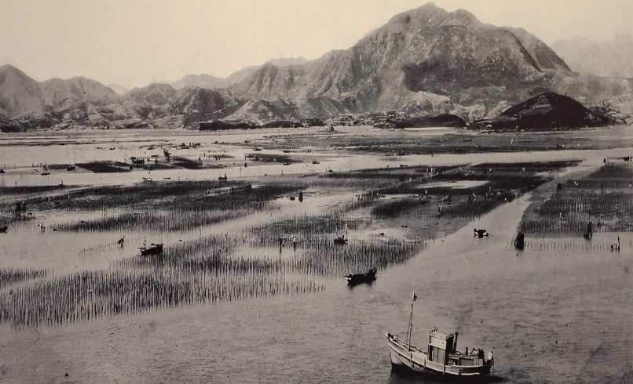
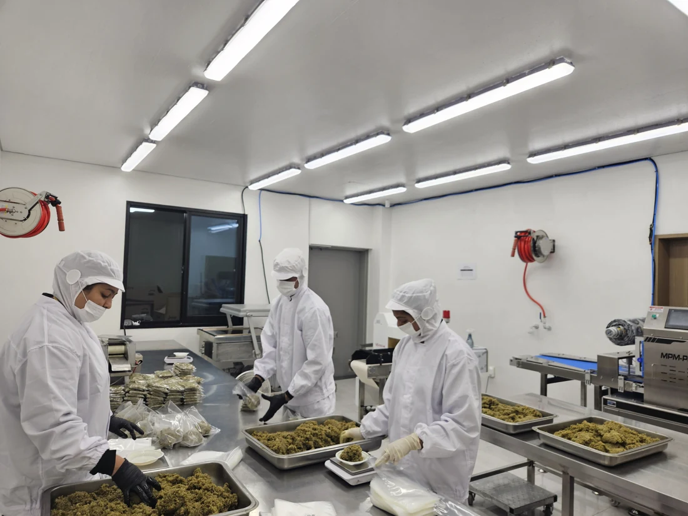
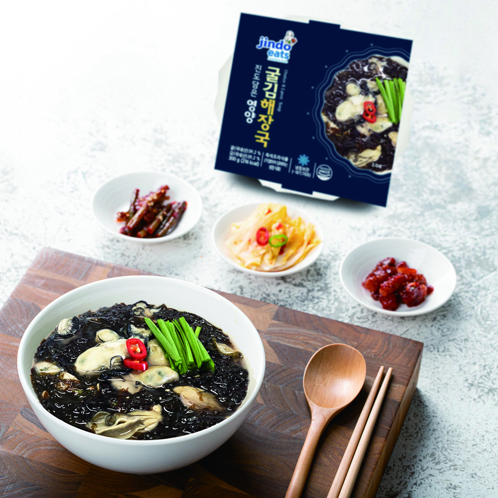

회사소개
기업 소개
진도 바다에서 4대째 수산업을 이어온 기적수산을 소개합니다.
용가네 브랜드
진도 바다에서
이어온 이야기
어업회사법인 유한회사 기적수산은 진도에서 4대째 수산업을 이어왔습니다. 직접 양식한 전복과 미역을 자사 시설에서 가공해 ‘용가네’ 브랜드의 수산식품으로 선보입니다.
원물 생산부터 제품 제조, 유통과 수출까지 이어지는 체계를 갖추고 진도산 수산물을 국내외에 공급합니다.
용가네 브랜드 보기 회사 연혁 보기
사업 구조
양식장에서 국내외 시장까지

양식
전복·미역·다시마 원물을 생산합니다.

가공
HACCP 인증 범위에 따라 자사 시설에서 수산물을 가공합니다.

상품화
가정간편식(HMR), 자숙전복을 제조하고 OEM을 상담합니다.

유통
온라인과 기업 간 거래(B2B) 채널로 제품을 공급합니다.

수출
일본과 미국 등 해외 시장에 진도산 수산물을 공급합니다.